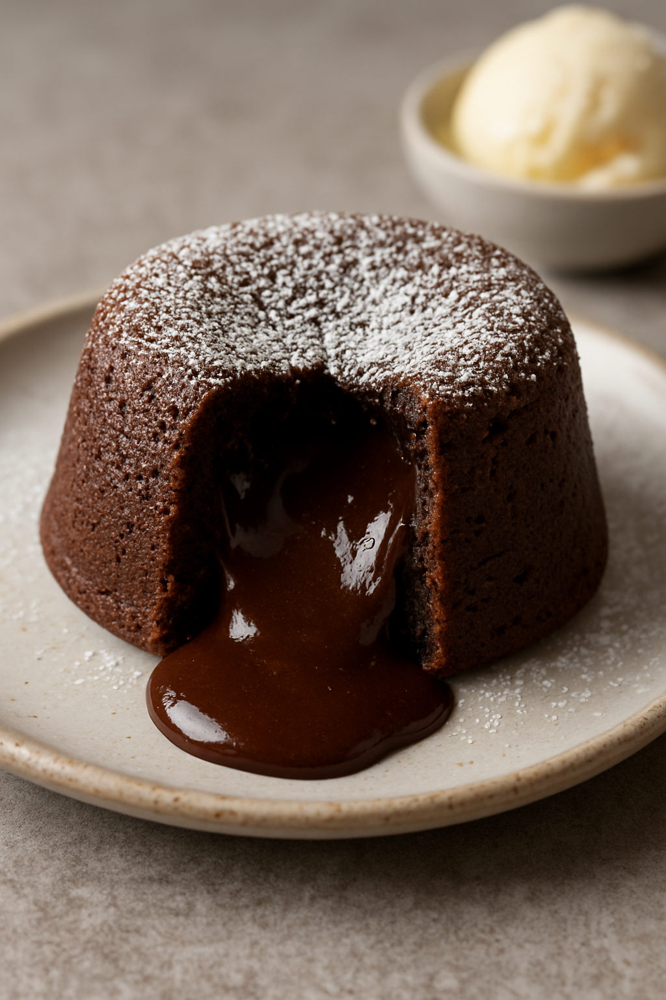
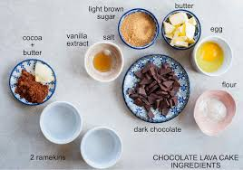

Chocolate Lava Cake Recipe
A rich and indulgent dessert with a gooey, molten chocolate center. Perfect for dinner parties or a cozy night in, this cake combines
a crisp outer layer with a warm, flowing chocolate core that will delight any chocolate lover.

Recipe Details
- Preparation Time: 15 minutes
- Cooking Time: 12 minutes
- Total Time: 27 minutes
- Servings: 4
- Difficulty: Intermediate
Ingredients
- 1/2 cup (115g) unsalted butter
- 4 oz (115g) semisweet chocolate, chopped
- 1 cup (120g) powdered sugar
- 2 large eggs
- 2 large egg yolks
- 1 teaspoon vanilla extract
- 1/4 cup (30g) all-purpose flour
- Pinch of salt
- Butter and cocoa powder for greasing ramekins

Instructions
- Preheat your oven to 425°F (220°C). Grease four 6-ounce ramekins with butter and dust with cocoa powder to prevent sticking.
- In a microwave-safe bowl, melt the butter and chopped chocolate together in 30-second intervals, stirring after each interval until smooth. Set aside to cool slightly.
- In a separate bowl, whisk together the powdered sugar, eggs, egg yolks, and vanilla extract until well combined.
- Gradually add the melted chocolate mixture to the eggs, whisking continuously to prevent the eggs from cooking.
- Sift in the flour and salt, folding gently until just combined. Be careful not to overmix.
- Divide the batter evenly among the prepared ramekins.
- Bake in the preheated oven for 12-14 minutes, or until the edges are set but the center is still slightly jiggly.
- Remove from the oven and let the cakes cool in the ramekins for 1 minute.
- Run a knife around the edges of the cakes to loosen them, then invert onto serving plates.
- Serve immediately, optionally with a dusting of powdered sugar, a scoop of vanilla ice cream, or fresh berries.
Tips for Success
- Use high-quality chocolate for the best flavor.
- Do not overbake; the center should remain molten.
- Prepare the ramekins well to ensure easy removal of the cakes.
- Serve immediately for the best experience.
Nutrition Facts
- Calories: 450 per serving
- Fat: 30g
- Saturated Fat: 18g
- Cholesterol: 150mg
- Sodium: 100mg
- Carbohydrates: 45g
- Fiber: 3g
- Sugar: 30g
- Protein: 6g
Please visit whitakerschocolates to find out more about the recipe.